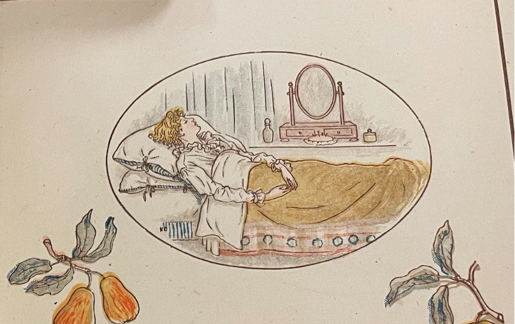

Excerpt from "On Captain Matthew Henderson, A Gentleman Who Held The Patent For His Honours Immediately From Almighty God."
MOURN, ilka grove the cushat kens!
Ye haz'lly shaws and briery dens!
Ye burnies, wimplin down your glens,
Wi' toddlin din,
Or foaming strang, wi' hasty stens,
Frae lin to lin.
Mourn little harebells o'er the lee;
Ye stately foxgloves fair to see;
Ye woodbines hanging bonnilie,
In scented bow'rs;
Ye roses on your thorny tree,
The first o' flow'rs.
At dawn, when ev'ry grassy blade
Droops with a diamond at his head,
At ev'n, when beans their fragrance shed,
I' th' rustling gale,
Ye maukins whiddin thro' the glade,
Come join my wail.
Mourn, spring, thou darling of the year;
Ilk cowslip cup shall kep a tear;
Thou, simmer, while each corny spear
Shoots up its head,
Thy gay, green, flow'ry tresses shear,
For him that's dead!
Thou, autumn, wi' thy yellow hair,
In grief thy sallow mantle tear!
Thou, winter, hurling thro' the air
The roaring blast,
Wide o'er the naked world declare
The worth we've lost!
BURNS